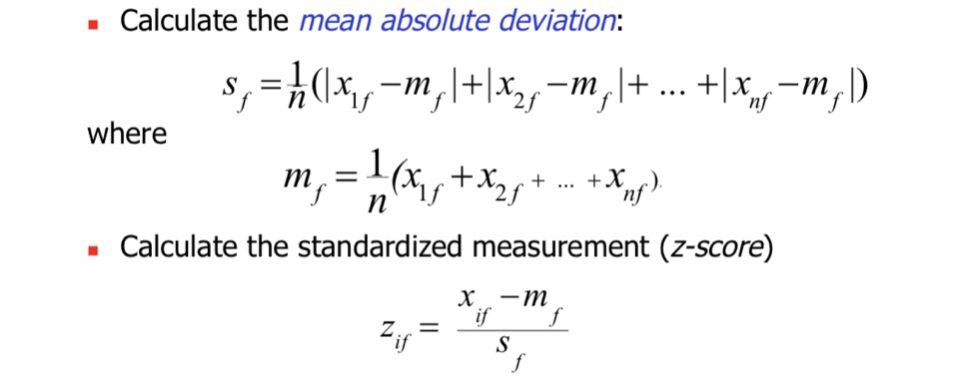
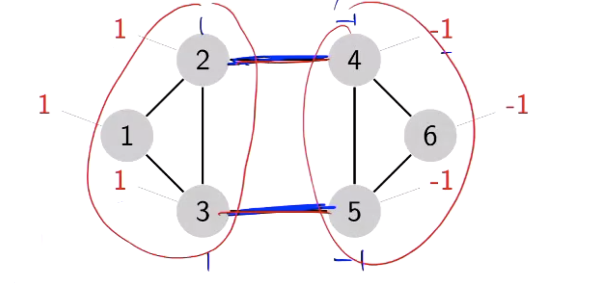
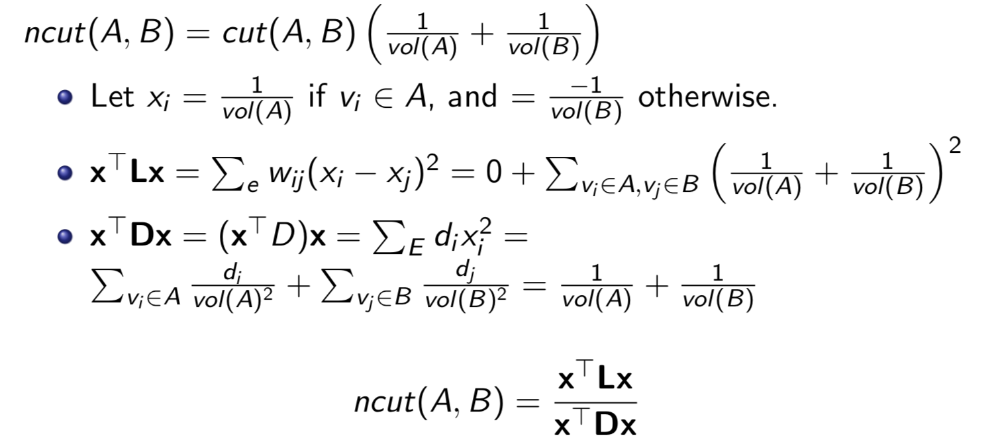

Abstract:
- What is Cluster Analysis?
- Types of Data in Cluster Analysis
- A Categorization of Major Clustering Methods
- Partitioning MethodsSpectral clustering
- Hierarchical Methods
- Spectral clustering
What is Cluster Analysis?
-
Cluster: a collection of data objects
- Similar to one another within the same cluster
- Dissimilar to the objects in other clusters
-
Cluster analysis
- Grouping a set of data objects into clusters
-
Clustering belongs to unsupervised classification: no predefined classes
-
Typical applications
- As a stand-alone tool to get insight into data
distribution - As a preprocessing step for other algorithms. E.g., K-means algorithm is widely used for preprocessing
- As a stand-alone tool to get insight into data
General Applications of Clustering:
- Pattern Recognition n Spatial Data Analysis
- create thematic maps in GIS by clustering feature spaces
- detect spatial clusters and explain them in spatial data mining
- Image Processing
- Economic Science (especially market research)
- WWW
- Document classification
- Cluster Weblog data to discover groups of similar
access patterns
Requirements of Clustering in Data Mining
- Scalability
对于大数据来说这非常重要，例如，k-means虽然有很多缺点，但是它很常用就是因为它快，并且running time可控，随时停下都会有结果。 - Ability to deal with different types of attributes
- Discovery of clusters with arbitrary shape
- Minimal requirements for domain knowledge to determine input parameters
- Able to deal with noise and outliers
- Insensitive to order of input records
- High dimensionality
- Incorporation of user-specified constraints n Interpretability and usability
Preliminaries
Typical Inputs
- Data matrix: N objects, each represented by a m- dimensional feature vector
- Dissimilarity(针对于distance) matrix or similarity matrix
- A square matrix giving distances between all pairs of objects.
- If similarity functions are used -> similarity matrix
Types of data
Interval-valued variables
-
Standardize data
 -
Using mean absolute deviation is more robust than using standard deviation
-
Similarity and Dissimilarity Between Objects:
- Distances are normally used to measure the similarity or dissimilarity between two data objects
- Minkowski distance, or the Lp norm of difference vector(a popular choice)
- Special cases:
- if p = 1, d is the Manhattan distance
- if p = 2, d is the Euclidean distance
- if p = ∞,
- Special cases:
- Mahalanobis distance
- Jaccard(交集大小/并集大小), Dice, cosine similarity, Pearson correlation coefficient
- Metric distance
-
common to all distance functions:
- d(i,j) ≥ 0 -> positiveness
- d(i,i) = 0 -> reflexivity 到自己的距离为0
- d(i,j) = d(j,i) -> symmetry 对称
- d(i,j) ≤ d(i,k) + d(k,j) -> triangular inequality三角形法则: 两边之和大于第三边
Binary Variables
- Symmetric: if both of its state are equally variable, that is, there is no preference on which outcome should be coded as 1.
- Asymmetric: if the outcome of its state are not equally important, such as positive or negative outcomes of a disease test.
- A contingency table for binary data
feature vector table:
- Simple matching coefficient (invariant, if the binary variable is symmetric):
E.g., in this case = 4 / 8
- Jaccard coefficient (noninvariant if the binary variable is
asymmetric):
E.g., in this case = 4 / 5 - feature vector <=> set:
E.g. ABCDEFGH分别对应上面的feature
i : {B,D,G}, j : {E,G,H}
Jaccard coefficient = 1 - 1/5 = 4/5
Another Example:
Nominal Variables
- A generalization of the binary variable in that it can take more than 2 states, e.g., red, yellow, blue, green
- Method 1: Simple matching
m: # of matches, p: total # of variables
- Method 2: One-hot encoding
- creating a new binary variable for each of the M nominal states
Ordinal(顺序的) Variables
- An ordinal variable can be discrete or continuous
- Order is important, e.g., rank
- Can be treated like interval-scaled
- replace Xif by their rank
- map the range of each variable onto [0, 1] by replacing i-th object in the f-th variable by
- compute the dissimilarity using method for interval-scaled variables
Ratio-Scaled Variables
- Ratio-scaled variable: a positive measurement on a nonlinear scale, approximately at exponential scale, such as AeBt or Ae-Bt
- methods:
- apply logarithmic transformation: yif = log(xif)
- treat them as continuous ordinal data treat their rank as interval-scaled
Major Clustering Approaches
- Partitioning algorithms: Construct various partitions and then evaluate them by some criterion
- Hierarchy algorithms: Create a hierarchical decomposition of the set of data (or objects) using some criterion
- Graph-based algorithms: Spectral clustering
- Density-based: based on connectivity and density functions
- Grid-based: based on a multiple-level granularity structure
- Model-based: A model is hypothesized for each of the clusters and the idea is to find the best fit of that model to each other
Partitioning Algorithms
- Partitioning method: Construct a “good” partition of a database of n objects into a set of k clusters
- Input: a n x m data matrix
- How to measure the “goodness” of a given partitioning
scheme? COST- Cost of a cluster
Cost表示cluster中每个x到center的距离，Cost越小越好- L2 distance used
- How to choose the center of a cluster?
- Centroid (i.e., Avg) of Xj -> Minimizes cost(Ci )
- Cost of k clusters: sum of cost(Ci)
- Cost of a cluster
- Global optimal: exhaustively enumerate all partitions
- Heuristic methods: k‐means and k‐medoids algorithms
K-Means
Lloyds Algorithm:
- Initialize k centers randomly
- While stopping condition is not met
- Assign each object to the cluster with the nearest center
- Compute the new center for each cluster.
- Stop when no more new assignment
Example

Special Matrix Factorization(因数分解) - Xn*d ≈ Un*d * Vn*d
- Loss function: || X - UV ||F2
- Constraints: Row of U must be a one-hot encoding.( 0 or 1 )
Expectation Maximization Alogrithm - Finding the best U and V simutaneously is hard, but
- Expectation step:
- Given V, find the best U
- Maximization step:
- Given U, find the best V
- Iterate until converging at a local minimum.
Comments
- Comment:
- Often terminates at a local optimum. The global optimum may be found using techniques such as: deterministic annealing and genetic algorithms
- No guarantee on the quality. Use k-means++.
- Strength: Relatively efficient: O(tkn), where n is # objects, k is # clusters, and t is # iterations. Normally, k, t << n.
- Comparing: PAM:O(k(n-k)2),CLARA:O(ks2+k(n-k))
- Weakness:
- Applicable only when mean is defined, then what about categorical data?
- Need to specify k, the number of clusters, in advance
- Unable to handle noisy data and outliers -> need data cleaning
- Not suitable to discover clusters with non-convex shapes(凹状)
K-Means++
- A simple initialization routine that guarantees to find a solution that is O(log k) competitive to the optimal k-means solution.
- Algorithm:
- Find first center uniformly at random
- For each data point x, compute D(x) as the distance to its nearest center
- Randomly sample one point as the new center, with probabilities proportional to D2(x)
- Goto 2 if less than k centers
- Run the normal k-means with the k centers
随机选择center，计算其他点到center的距离的平方，大的是center的概率就高
K-Medoids(PAM)
- K-Medoids: Each cluster is represented by one of the objects in the cluster
- Use real object to represent the cluster
- Select k representative objects arbitrarily
- For each pair of non-selected object h and selected
object i, calculate the total swapping cost TCih - For each pair of i and h,
*If TCih <0,i is replaced by h- Then assign each non-selected object to the most
similar representative object
- Then assign each non-selected object to the most
- repeat steps 2-3 until there is no change
- PAM is more robust than k-means in the presence of noise and outliers because a medoid is less influenced by outliers or other extreme values than a mean
- PAM works efficiently for small data sets but does not scale well for large data sets.
- O(k(n-k)2) for each iteration, where n is # of data, k is # of clusters
Hierarchy algorithms
- Produces a set of nested clusters organized as a hierarchical tree
- Can be visualized as a dendrogram(系统树图)
- A tree like diagram that records the sequences of merges or splits
- A clustering of the data objects is obtained by cutting the dendrogram at the desired level, then each connected component forms a cluster.
- Two main types of hierarchical clustering
- Agglomerative:
- Start with the points as individual clusters
- At each step, merge the closest pair of clusters until only one cluster (or k clusters) left
- Divisive:
- Start with one, all-inclusive cluster
- At each step, split a cluster until each cluster contains a point (or there are k clusters)
- Traditional hierarchical algorithms use a similarity or distance matrix
- Merge or split one cluster at a time
Agglomerative Clustering Algorithm
-
Compute the proximity matrix (i.e., matrix of pair-wise distances)
-
Let each data point be a cluster
-
Repeat
- Merge the two clusters
- Update the proximity matrix
-
Until only a single cluster remains
-
Key Operation : compute the proximity of two clusters <- different from that of two points
- Different approaches to defining the distance between clusters distinguish the different algorithms
-
How to Define Inter-Cluster Distance:
- MIN
- MAX
- Centroid-based
- Group Average
- Other methods driven by an objective
Cluster Similarity: MIN or Single Link/LINK
MIN: Min distance = Max similarity
- Similarity of two clusters is based on the two most similar (closest) points in the different clusters
- sim(Ci, Cj) = max(sim(px, py))
Ci,Cj 合并以后, 其他cluster与其的相似度 = 与原Ci，Cj相似大的那个相似度
- Strength : can handle non-elliptical(不是椭圆的) shapes
- Limitations: Sensitive to noise and outliers
Cluster Similarity: MAX or Complete Link (CLINK)
MAX: Max distance = Min similarity
- Similarity of two clusters is based on the two least similar (most distant) points in the different clusters
- sim(Ci, Cj) = min(sim(px, py))
- Strength : Less susceptible to noise and outliers
- Limitations:
- Tends to break large clusters
- Biased towards globular clusters
Cluster Similarity: Group Average
- GAAC (Group Average Agglomerative Clustering)
- Similarity of two clusters is the average of pair-wise similarity between points in the two clusters.
- sim(Ci, Cj) = avg(sim(pi, pj))
- Strengths: Less susceptible to noise and outliers
- Limitations: Biased towards globular clusters
Spectral clustering
A Tutorial on Spectral Clustering (CMU)
谱聚类要做的事情就是完成对图的分割，它想要找到最好的分割方式，来将图分割开来。
- A — adjacency matrix
- Let A is the adjacency matrix of a “normal” (unweighted) undirected graph G.
- An edge between vi and vj is modelled as (i, j) and (j, i), i.e., Aij=Aji=1.
- Aii= 0
- D — degree matrix
- D = diag(d1, . . . dn)
- Dii = di > 0, Dij = 0, j ≠ i
- L — Laplacian matrix
- L = D - A
证明过程:
- L = D - A
xTLx: f(all of the cut edges weighted)

- One edge which 2 nodes have the same value should be in one cluster, and does not contribute to the cut value!
- Cut edges: Edges which nodes have different values
在这个例子中,
edge24 cut value: 1/2 * (1-(-1))^2 = 2, same as edge42.
xTLx = 4 + 4 = 8
Min cut
- Biased towards cutting small sets of isolated nodes.
如图，min-cut可能很偏，得到的不是balanced cluster
Normalized cut
